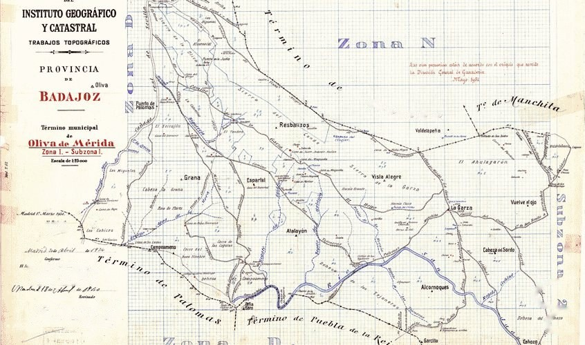

Digitalización y datos
Pasamos a digital planos y documentos de archivo, recogemos datos en campo para la administración y depuramos ficheros del Catastro y listados municipales.

Qué hacemos
Planos y documentos
Digitalización de planos a cualquier escala y de documentos de archivos públicos y privados.
Tomas de datos en campo
Encuestas ganaderas, muestras de cereales, inventarios y comprobaciones sobre el terreno para la administración.
Ficheros del Catastro y municipales
Leemos los ficheros del Catastro y los cruzamos con padrones y listados municipales para depurarlos.
Cómo tratamos los ficheros
Para cruzar los ficheros de otro municipio basta con cambiar la configuración del programa. De cada proceso queda un informe con lo que se ha hecho y lo que no, y lo que no se ha podido resolver pasa a una hoja de revisión que explica por qué.
¿Un archivo o una toma de datos?
Cuéntenos qué hay que digitalizar o recoger, qué volumen tiene y para cuándo lo necesita. Le explicaremos cómo lo organizaríamos y le pasaremos presupuesto.
- emiliocontadorbrito@gmail.com
- Calle Matilde Tagle Ortiz, 28, 5.º D, 06006 Badajoz